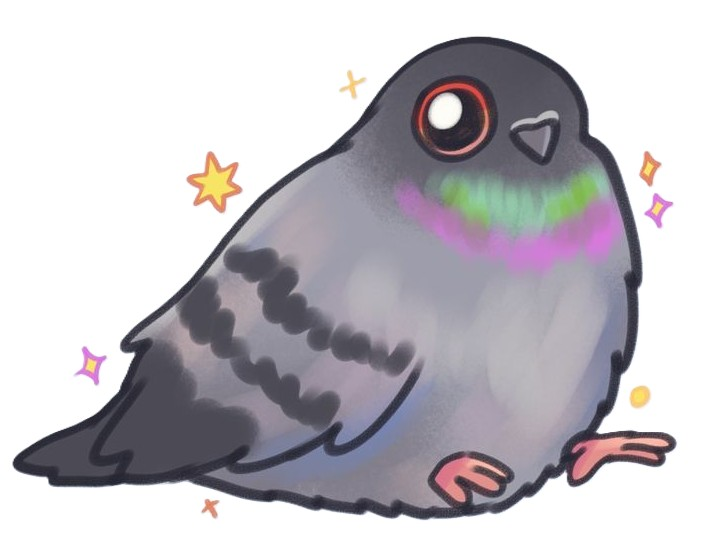
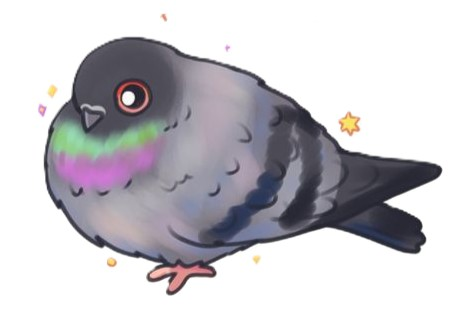

Gołębie to najpowszechniejszy gatunek ptaków,
które można spotkać właściwie na wszystkich kontynentach,
z wyjątkiem Antarktydy. Choć kojarzą się przede wszystkim z
dosyć uporczywymi szkodnikami, to jednak ptaki te zaliczane
są do niezwykle inteligentnych. Co warto o niech wiedzieć?
1. Gołębie odznaczają się niesamowitą pamięcią. Przeprowadzane
wielokrotnie badania na tych ptakach dowodzą, że raz pokonana
trasa nie stanowi dla nich żadnego problemu. Potrafią bezbłędnie
się z nią uporać nawet po bardzo długiej przerwie.
2. Gołąb słyszy jedynie infradźwięki, czyli fale akustyczne,
których człowiek nie jest w stanie zarejestrować

3. Gołębie odznaczają się niesamowitym wzrokiem. Świetnie widzą
nawet do kilkudziesięciu metrów. Co więcej, można śmiało powiedzieć,
że mają oczy dookoła głowy, ponieważ kąt widzenia wynosi 360 stopni.
Podczas chodzenia wykonują dodatkowy ruch głową, który pozwala im
dostrzec ewentualne zagrożenie na czas.
4. Gołębie najczęściej wiążą się w pary na całe życie. Są do siebie
niezwykle przywiązane, a po założeniu rodziny dzielą się wszelkimi
obowiązkami na pół.

5. Skala widzialnych przez gołębie kolorów jest znacznie ograniczona.
Wynika to z faktu, iż widzą one tetrachromatycznie, a zatem są w
stanie rozpoznać kolor zielony, niebieski, czerwony oraz ultrafioletowy.
6. Gruchanie gołąbi może być znakiem wielkiej irytacji, choć nie jest to
reguła. Takie dźwięki wydawane przez samców są również sposobem na podryw.
Gruchanie może być wobec tego próbą flirtowania z samicą.